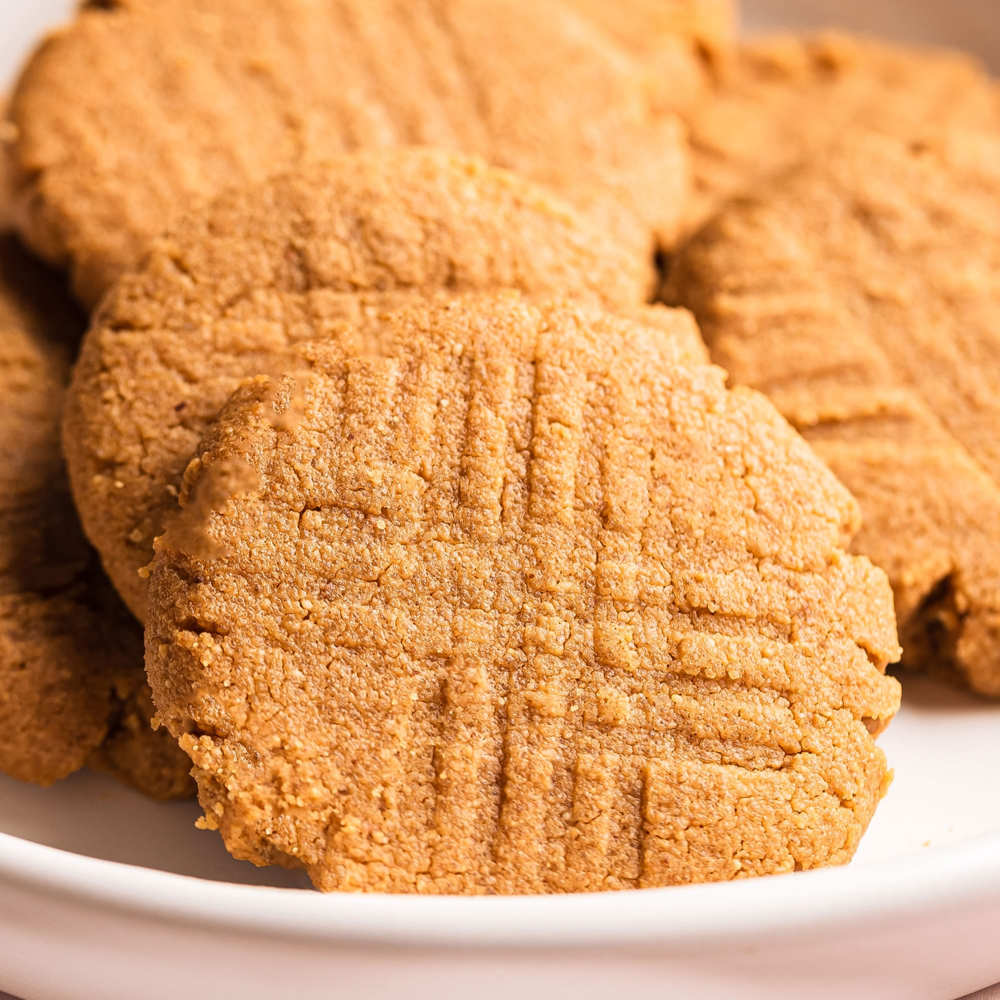

Buffalo Chicken Wraps

These 3-ingredient peanut butter cookies are one of my favorite cookies to make. They are the only peanut butter cookies my family will eat! Sprinkle a pinch of sugar on cookies before baking, if desired.
- 1 cup peanut butter
- 1 cup white sugar
- 1 egg
- Preheat the oven to 350 degrees F (175 degrees C).
- Mix peanut butter, sugar, and egg together in a bowl using an electric mixer until smooth and creamy. Roll mixture into small balls and arrange on a baking sheet; flatten each with a fork, making a criss-cross pattern.
- Bake in the preheated oven for 10 minutes. Cool cookies on the baking sheet for 2 minutes before moving to a plate.